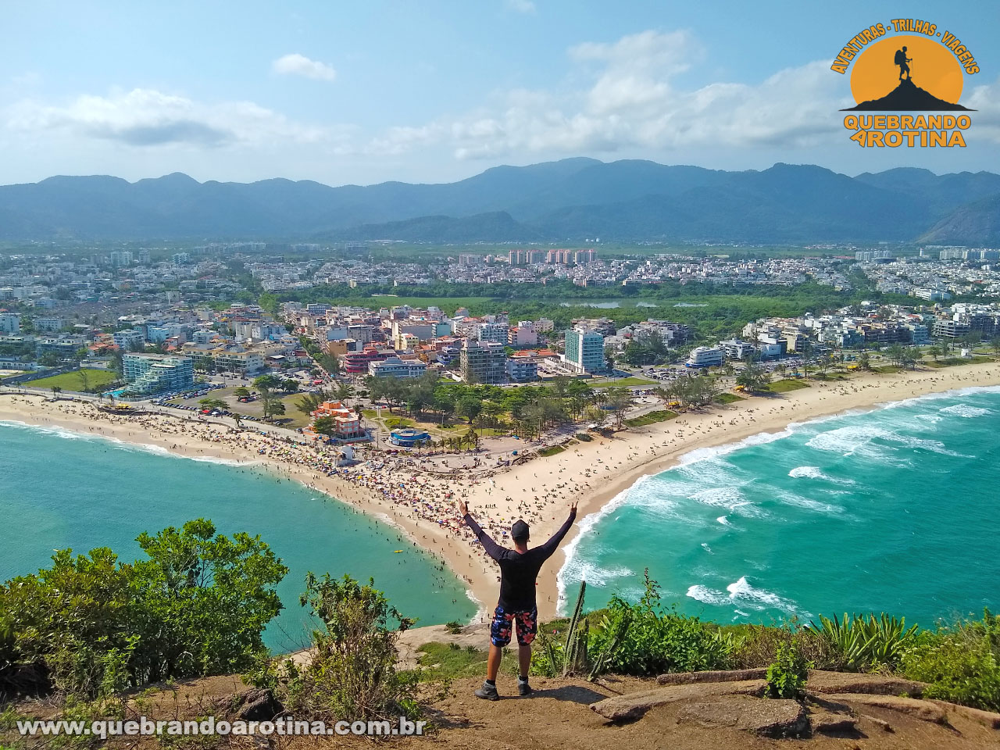

📍 600m da casa (7 min a pé)Pedra do Pontal
Leve / Moderada⏱️ Caminhada: ~25 a 35 min de subida
Oferece uma vista panorâmica incrível das praias da Macumba e Recreio. Atenção: a travessia até a pedra deve ser feita na maré baixa.
📍 Abrir Ponto de Partida